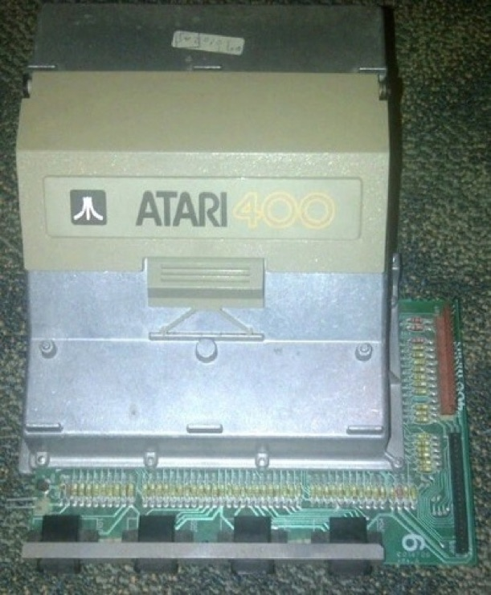
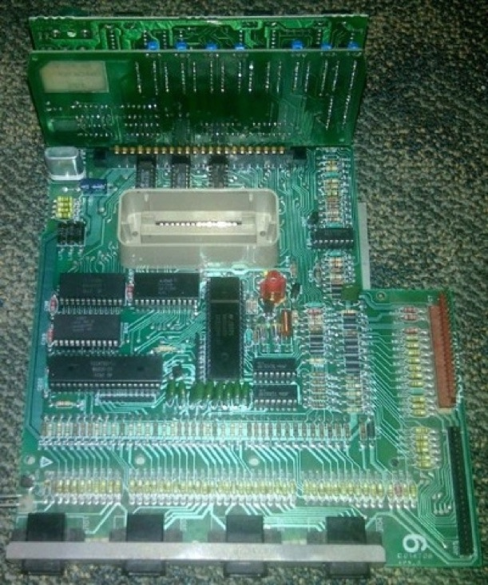
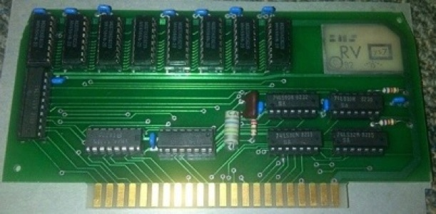
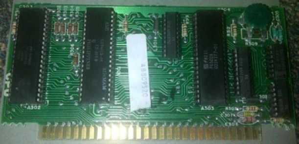
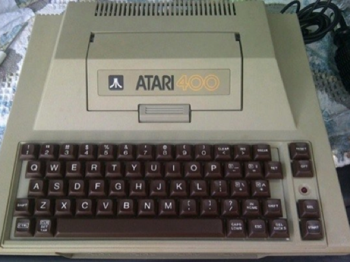

Atari 400 teardown
Monday, August 1, 2011
The Atari VCS (later rebranded the Atari 2600), released in 1977, was the first true game console - but it really wasn’t a computer - you couldn’t do BASIC programming or run a word processor on it because it didn’t even have a keyboard.
The Atari 400 and its big brother, the Atari 800, were essentially the first “real” computers to popularize home video games. They had nice specs for the time - a MOS 6502 CPU, advanced sound capabilities, joystick ports, an Atari VCS-style cartridge port (the 800 had 2 cartridge ports instead of one), and support for peripherals such as printers, tape drives, and disk drives. You can think of it as the Atari VCS evolved into a real computer - it was the first computer that was for video games AND productivity! It opened the doors to the computer market for video game makers, and more importantly, led to the popularization of computer gaming.
I have yet to come across a teardown of an Atari 400 on the Internet. There are some Atari 800 teardowns, but the Atari 800 wasn’t popular in the market because it cost more than the Atari 400 and only gave you a second cartridge port (which most software vendors refused to use). As a result, it was the Atari 400 that primarily revolutionized computer gaming, and this post is going to go through a teardown of an Atari 400.
OK - first up, the Atari 400 came with a membrane keyboard that could be upgraded to a real keyboard like the one that you see in the picture at the top of the post. The cartridge slot is directly in the middle - if you press the release button, the hatch flips up to show the cartridge bay (most software for the Atari 400, including games, were distributed by cartridge).
After removing the screws on the reverse of the case, you can remove the cover and detach the keyboard ribbon cable to reveal the power supply (on the right), the speaker (on the left), and the main computer circuity - except for the 4 ports on the front (joystick), most of the circuitry resides under a heavy metal shield that is very thick!

Next, you can remove the power supply board (which also has the video out cable attached) by removing two screws that hold it into place and then remove the main computer circuitry.

Next, to get rid of the heavy metal enclosure, we need to remove several screws from the metal plate under the motherboard and then lift up the top of the metal enclosure. This will expose the motherboard as well as the two riser cards.
The beige plastic port in the middle is the cartridge slot. The red connector on the right attaches to the power supply and video out, and the black connector on the right attaches to the keyboard ribbon. The big vertical chip immediately below the cartridge slot is the famous POKEY chip that handles the awesome Atari sound - the joystick, keyboard and I/O processing are handled by the other chips on the motherboard.

Now lets take a closer look at the riser cards - the front riser card holds the RAM, in this case, 48K (the capacity is printed on the reverse of the card, making it easy to identify).

The rear riser card holds the graphics and CPU. The first big chip from the left is the graphics processor, the second big chip from the left controls direct RAM access, and the third big chip from the left is the Synertek MOS 6502 CPU (P6502B).

